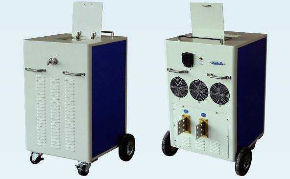

地铁专用直流大电流电源发生器(直流开关试验装置)


总体介绍
RL-15000A 地铁专用直流大电流电源(直流开关试验装置)是专门应用于对地铁及轻轨用DC1500V、DC750V直流开关及其隔离放大器、保护装置进行功能试验的设备，通过模拟输出故障电流或负荷电流，测试直流开关的大电流脱扣特性或过热跳闸特性及延时特性，测试隔离放大器特性和保护装置特性。体积小、重量轻，便于在地铁、轻轨现场试验。
功能介绍
1、电源按给定的输出的电流或电压偏差分别自动进行PI稳流，且可通过给定输出特性控制工作时间，上升时间和下降时间等。
2、系统设置了过流、过压、过热、和输入过欠压等保护措施。
3、系统提供触摸屏显示及控制系统的状态及输出的电压、电流和工作时间等参数。
4、电源具有恒流工作模式，其中电流限值为15000A。
5、电源系统具有软启动功能，电源系统的给定值由小逐渐增大，软启动时间可设定。
技术指标
1、输入电压：三相AC 380V±10％ 50Hz
2、输入最大电流：AC 65A
3、功率因数：≥0.9；效率：≥70％
4、输出特性：恒流
5、输出直流电流：0～15000A（可定制）
6、稳流精度：≤1％
7、外形尺寸：680×600×750（mm）（含把手、车轮尺寸）
8、重量：75（kg）
9、冷却方式：风冷
售后服务
1.如发现仪器有不正常情况或故障请及时与我们联系，以便为您提供最便捷的处理方案，未经允许，请不要自行处理，以免发生危险。
2.其他售后服务见售后服务书。